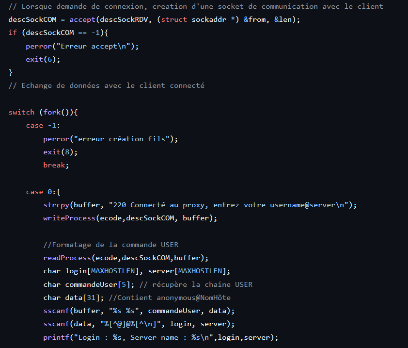
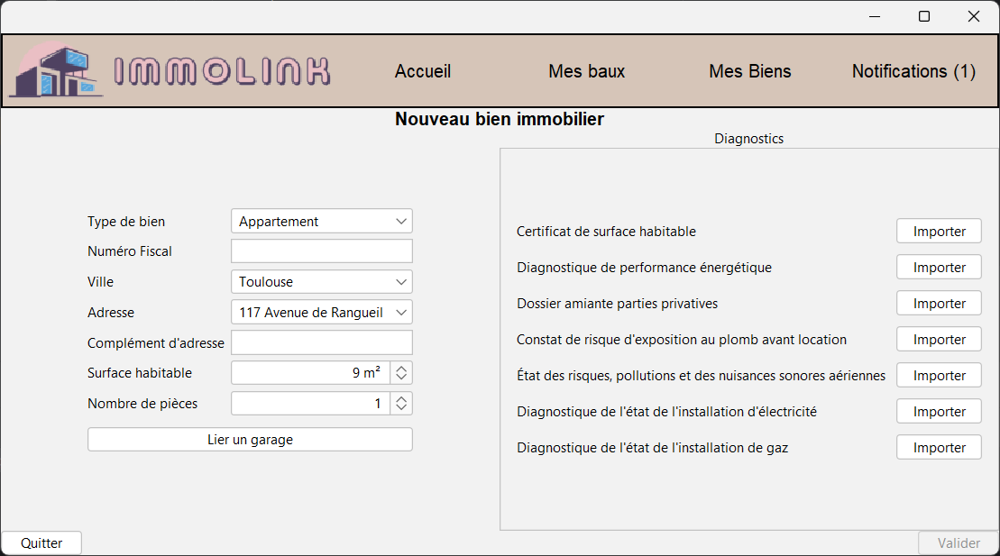

Langages et Technologies
Les outils et langages avec lesquels je travaille
Développeur ERP Junior en formation
Je suis étudiant en BUT Informatique actuellement en 3ème année et en alternance chez Systéléo à Toulouse.
Ce portfolio présente mon évolution professionnelle et l'acquisition de mes compétences au cours de ma formation et de mes expériences.
Évolution de mes compétences à travers mes expériences
Concevoir, coder, tester et intégrer une solution informatique pour un client.
Proposer des applications informatiques optimisées en fonction de critères spécifiques : temps d’exécution, précision, consommation de ressources.
Installer, configurer, mettre à disposition, maintenir en conditions opérationnelles des infrastructures, des services et des réseaux et optimiser le système informatique d’une organisation.
Concevoir, gérer, administrer et exploiter les données de l’entreprise et mettre à disposition toutes les informations pour un bon pilotage de l’entreprise.
Satisfaire les besoins des utilisateurs au regard de la chaîne de valeur du client, organiser et piloter un projet informatique avec des méthodes classiques ou agiles.
Acquérir, développer et exploiter les aptitudes nécessaires pour travailler efficacement dans une équipe informatique.
Découvrez les projets qui illustrent l'acquisition de mes compétences

2024Compétences liées : Administrer
Création d'un proxy ftp entre un client et un serveur distant en C, le proxy permettant d'exécuter LIST sur un serveur distant. Il y'a une connexion passive du serveur vers le client et une connexion active du client vers le serveur.

2024-2025Compétences liées : Développer, Gérer, Conduire, Collaborer
Immolink est une application de gestion de biens immobiliers destinée aux propriétaires privés. Elle simplifie la gestion locative en centralisant les informations essentielles (coordonnées des locataires, diagnostics, relevés de compteurs, etc.) et en automatisant des processus clés comme la régularisation des charges ou la déclaration fiscale.
Les outils et langages avec lesquels je travaille
Mon parcours professionnel et académique
Développeur ERP Junior en Alternance
Après une période de stage effectuée en 2024, j'ai intégré Systéléo en tant qu'alternant. Cette entreprise est spécialisée dans l'intégration d'une ERP pour les coutiers en assurance. Mon rôle principal est de développer des tâches automatique (workflow) pour des clients mais aussi de faire de la maintenance corrective et évolutive sur l'ERP.
N'hésitez pas à me contacter pour toute opportunité ou question